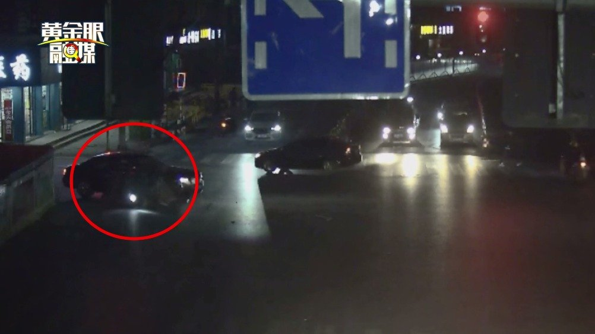

这20万没5年要不回来。@新浪视频:【电瓶车逆行闯红灯撞上劳斯莱斯车损20万 车主：该怎么赔就怎么赔】26号，金华义乌一辆电瓶车撞上一辆劳斯莱斯，造成劳斯莱斯右侧车头凹陷，右侧大灯受损，还有不同程度刮痕，预计维修费用20多万元。交警调看监控发现，电瓶车存在骑车带人、逆向行驶、跨越实线、闯红灯等违法行为，负主要责任。电瓶车希望劳斯莱斯走保险多赔一点，遭拒绝。黄金眼融媒的微博视频 16万次播放 00:39